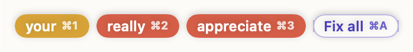

Everyone
Catch typos as you go
Finish a sentence and pause. The right word appears right above each mistake. ⌘1 fixes one and ⌘A fixes them all. If nothing's wrong, Lina stays quiet.
Thank you for you're help, I realy apreciate it.